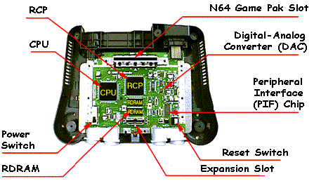

As the following illustration shows, the N64 system has four chips at its core:
The CPU and RCP work together to process the game program. They can both be executing at the same time. Each process they execute is called thread and task accordingly.
Nintendo® Confidential
Copyright © 1999
Nintendo of America Inc. All Rights Reserved
Nintendo and N64 are registered trademarks of Nintendo
Last Updated March, 1999